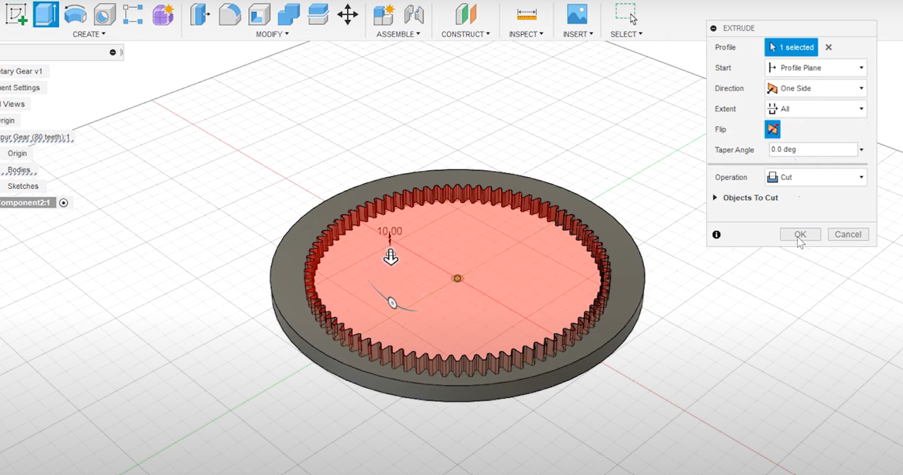
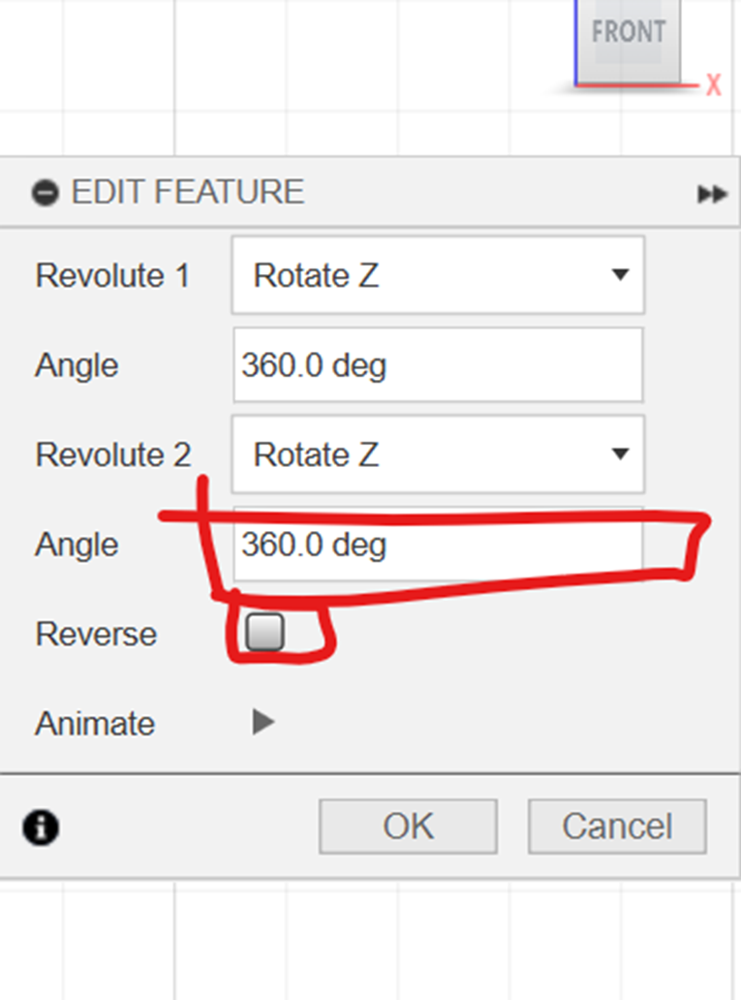

CAD Design
Fusion 360 Tutorial
Planetary Gear Train Modeling and Animation
Introduction
The desire parameters for our planter, its made up of three types of gears, which are shown on the screen here, the ring gear, which has its teeth on the inside it sometimes called an internal here, the sun gears at the center and a number of planetary gears that match between the sun gear and the ring gear shown here as well for this example, we’re going to use spur ears for the sun in the planets but you can also use bevel gears or other types of gears if you need to the primary advantage of planetary gear systems is that they can develop high gear ratios in a small amount of space.For this example we’re going to design a gear ratio of one to six that means for every rotation of the shaft our input shaft rotate six times also for this example we’re going to send that the ring gear is fixed and that the sun gear is our driving gear. The open is there we’re gonna be a carrier that’s attached to the planets, I’m not gonna go into great detail on the gear design.
First will find the module to be two and the angle to be pretty standard next let’s choose a number of teeth for the ring gear, which will also determine its size. Let’s use it for the ring gear which gives us a pit circle diameter of 160 this equation can be used to calculate the number of teeth from the sun gear. If we fill in and for us we determine that our sun gear has 16 teeth, knowing that we can calculate the plan this equation filling in the number of teeth through the ring in the sun gears calculate that each planet will have 32 teeth. We need to define the number of planets I’d like these three planets for this planets.
Step 1: Design the Gear Components:
Launch Fusion 360 and create a new design.Use the "Create" menu to design the gear components. You can use the "Create" > "Gear" tool to generate the gear profiles.
Design the sun gear, planet gears, and ring gear as separate components.
Step 2: Assemble the Gear Train: Creat a Spur gear with 80 teeth
start fusion360 and modeling for example, use the built-in Spur add turn on the tools ,scripts, and I will click on the add tab and go down to spur here and click this at command to the panel in the model workspace. If we go back to Solid, we go to, and there’s our Spurger down at the bottom, and then we’ll just fill in some of the desire parameters that we calculated, we do our first ADD teeth backlash at 01 mm Philip radius thickness is 10 mm and the hole for this one will just be as shown.
Step 3: Use the "Assemble" tool to position the gear components in the correct arrangement for the planetary gear train.
Create a regular spur gear for us with Adding teeth but we actually want the inverse so we’re gonna do is create another cylinder what we can do is use the extra command to cut out the shape of the gear from the cylinder so activator 
Step 4: Gear with 32 teeth for planets
cylinder no press E, for extrude, which is the face of the gear Choose a cut and -10 click now ring been cut out
Step 5: component positions and rotation pasting
Is actually remove the spur rename this one to bring gear with the ringer and let’s go ahead and model the planets. Now we go to create and find another spur here almost all are going to stay the same except for the number of teeth or planets have 32 teeth
Step 6: 240’ for the angle
so we’ll set that here and I’m gonna add a little bit of backlash also or hold diameter I’m gonna set to 5 mm now. If we switch to a top view we can copy this planet and define the other two so I’m gonna press M to move. We’re gonna choose components and I want to zoom in here to make sure, we set the origin of the move to the center because we want to create two copies and click create copy up 48 mm the reason I moved up 48 mm is because of the circles of the sun and the planet gears if we add both of the pitch circle diameters together and divide by two gives us 48 I’m gonna repeat the two more times but this time I’m gonna add a rotation rotate create a copy axis is gonna be the center here and because we want equal space gears they’re gonna be 120° apart
Step 7: middle Gear for the sun and its the center 16 teeth
And then the last one I take 240°, but we’re not gonna create a card because it’s the last one in place that we need to model is our sun gear
Step 8: Using the join operation for the profile plane
Create gear and gear has 16 teeth at 16 and then click OK so I do want to add an input shaft or gear zoom in. I’m gonna set the Sun gear as our active component sketch on the face of this gear.
Step 9: Position for matching and coonecting others spurs gears
We do want to capture position and all I’m gonna do is press P to project and we’re gonna project the input shaft, diameter current sketch click finish and then I’m just gonna press for extrude pick that diameter is gonna be a joint to join it to the shaft and I’m just gonna go -40 mm, now we’ve got input connected to our sun gear, so I just wanna stay organized a little bit so I’m gonna actually rename our gears..5 degrees reposition and 19 and 7.5 for planets
Step 10: creat a new component for the carrier part
And let’s weave everything that correctly. Let’s go ahead and capture position less component we need models. The carrier is essentially a bracket that’s going to connect each of the planet years to our output shaft.
Step 11: sketch and connect the dots of the planets and the sun
Let’s go ahead and create a new component and call carrier and we’re gonna create a new sketch on the face of the planet gears themselves, and you’ve actually had quite a bit of artistic license to drive this how you want So there’s a carrier model connected to each of the planet with an op included as well so let’s go ahead and find the joint because each of the components someplace we can use as belt joints first let’s find the joints between the carrier, and each of the planets will assemble as built joint we want these to be revolute joints and we’re going to choose the planet And the carrier position will be the shaft and repeat that to the other two planets.
So there’s a carrier model connected to each of the planet with an op included as well so let’s go ahead and find the joint because each of the components someplace we can use as belt joints first let’s find the joints between the carrier, and each of the planets will assemble as built joint we want these to be revolute joints and we’re going to choose the planet And the carrier position will be the shaft and repeat that to the other two planets.
Step 12: motion link and add a revolute point
And let’s weave everything that correctly. Let’s go ahead and capture position less component we need models. The carrier is essentially a bracket that’s going to connect each of the planet years to our output shaft.
Step 13: Do the same for the 3 components and the center
we find the ring gears being fixed so let’s click on the gear and choose ground to hold in place next week to define a joint between the carrier and the ring gear and the sun and the ring gear.
Step 14: change the angle by 360/60
To find the motion links , reset the position let’s start with the easy one. find the motion link between the sun gear and the carrier so we can just select her joints over here on the side the sun and the carrier remember from the beginning.
Step 15: Match the teeth motions by using this equation
Let’s go ahead and start by finding the carrier again go ahead and choose as symbol as built joint, the carrier and the ring gear and the point of rotation will be around the center point will do the same thing for the sun gear. we’ve got a ratio six to one so that means for everyone rotation of the shaft are input shaft rotates six times, the motion between the sun gear and each of the planets will go to assemble motion link and this time will go sun and then the planet and because our planet years are twice the size or twice of teeth is the sun gear. We should use 180 and reverse That for the other two years now you rotate the sun gear in the right direction of the mashing isn’t working quite correctly. Looks like it’s slightly the same and the reason for that is that it’s not a true two to one relationship between the sun and the planets, the carriers rotating as well, so we need to add that to the rotation of the sun reset position and take another look at the motion between the sun and the planets to fix it.we need to add add additional rotation to the sun gear we need to add is 360° Divided by the ratio between the ring gear and the sun gear that’s 80 teeth divided by 16 teeth if we do that for each of the other two planets before we fix us I’m gonna name the motion link so that we can keep them straight this first one if you remember the relationship between the sun gear, and the carrier is next the relationships between the sun gear and the planets Let’s take a closer look at the relationship between the sun and the planets
Step 16: final use the Motion Study for simulation

Engineering Drawing for the Planetary Gear
Our Team Member's modeling :
By Makoma
By Farzaneh
By Lozi
Plugin (FM Gear)
This how we used plugins in our Fusion 360 :
First we go to the utilities tab and add and search for plugins.
Then click on ADD-INS and find Fusion 360 App Store.
Search for FM gear in App Store search box and download the win64 version.
Go back to fusion and in the solid tab click on "create".
Select FM gear in the drop-down menu.
Choose a 16 number of teeth
Then create another FM gear with 32 gears
Position check
Capture position
In the solid tab go to Assemble, and choose "As Built Joint".
Connect the rotational points
Choose the 360 deg and reverse the motions so there is no conflict
Fusion 360 Parameter Design
Utilize User Parameters in Autodesk Fusion 360 to manage the dimensions of objects within your design. With User Parameters, you can establish equations and connections that can be applied consistently across sketch dimensions and modeling features.
This feature facilitates the seamless propagation of size adjustments throughout the entire model, accessible conveniently through the Change Parameters dialog.
User Interface
Modify- Change Parameters
This interface comes out after pressing on “Change Parameters”, you then have to press on + icon to insert Parameters.
The next step is to add the user Parameters. You must add a Name, Unit, Expression and then click Ok.
You repeat the same task and do it for Sphere Height
After inserting all the parameters needed, you then click Ok .
Go to Assemble-New Component, and create a new component , you can give it the appropriate name according to your project.
Then go to Solid-Create Sketch, to create your desired sketch.
Now choose the needed shape to start sketching; in our case we’re creating a sphere, therefor we chose a circle.
Now you press S and use Sphere Radius to make the circle.
After Completing the measurements.
Select the model the circle then choose Extrude and for distance write”SphereHeight” then press ok.
After Extruding the shape, click on “Shell” and select the top of the model and then input inside thickness as 3mm then click OK. After defining the wall thickness go to main and copy the model and then past after doing this use joint.
Aligne the second shape with the first one.
Now we can start adjusting the parameters to our liking.
Now we can start adjusting the parameters to our liking.
Now we can start adjusting the parameters to our liking.
Parametric Sphere
Fusion 360 Automated Modelling
Connecting Carriers with Automated Modeling in Fusion 360
Step 1: Defining the Connecting Body
1.1. Activate Automated Modeling:Switch to the Design workspace and navigate to the Create menu. Choose Automated Modeling to access its tools.
1.2. Select Faces to Connect:
Use the Faces to Connect tool to select the previously identified connection points on each carrier. Ensure all relevant faces are included.
1.3. Define Avoid Zones:
In the Avoid Bodies section, select any existing geometry you want the generated connecting body to avoid, such as internal components or clearances.
1.4. Generate Alternatives/ Shapes:
Click the Generate button to generate multiple alternative designs for the connecting body based on your specifications.
Step 2: Selecting the Connecting Body
2.1. Analyze Alternatives:Review the generated options and evaluate their compatibility with your design goals. Consider factors like functionality, aesthetics, and weight.
2.2. Select Preferred Option:
Choose the design alternative that best suits your needs and click on it to make it active in the workspace.